Choshi, Chiba: things to do, food and stays
Choshi · Chiba
Choshi
Highlighted on the Chiba map.

Stay
犬吠埼観光ホテル
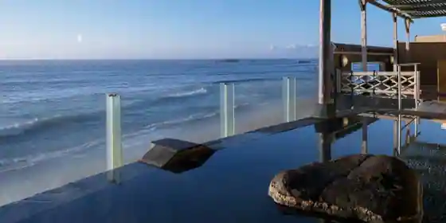
Inubozaki Kanko Hotel
Hotel in Inubozaki, Choshi with open-air baths and scenic views.
別邸 海と森
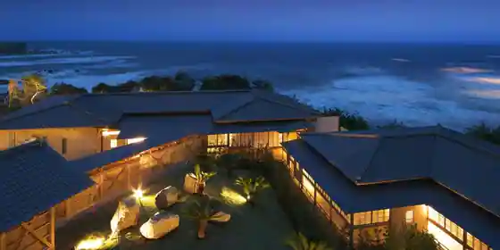
Bettei Umi To Mori
Inn in Inubozaki, Choshi with open-air baths.
かもめホテル
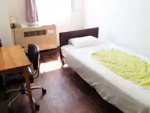
Kamome Hotel
Hotel in Chuo, Choshi with business travelers.
ホテルサンライズ銚子
Hotel Sanraizu Choshi
Hotel in Sanken, Choshi with Wi-Fi and parking.
銚子プラザホテル 銚子駅前（BBHホテルグループ）
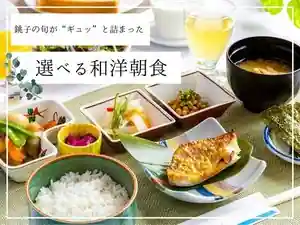
Choshi Plaza Hotel Choshi Ekimae (BBH Hotel Gurupu)
Hotel in Nishishiba, Choshi with breakfast available and parking; 2-minute walk from Choshi Station.
ホテルサンサニー
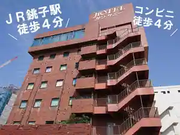
Hotel Sansani
Hotel in Sanken, Choshi with Wi-Fi and parking; 4-minute walk from Choshi Station.
木内旅館
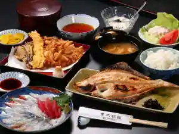
Kiuchi Ryokan
Ryokan inn in Honjo, Choshi with local seafood dinners.
セルフプラスホテル銚子
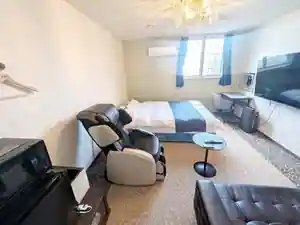
Serufupurasu Hotel Choshi
ペンション ヴィラ コモンズ
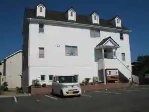
Pension Villa Komonzu
あしか荘
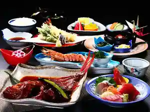
Ashika So
Inn in Umikashima, Choshi with scenic views.
ペンションヘルシーウイング
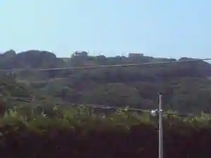
Pension Herushiuingu
Solana銚子犬吠埼
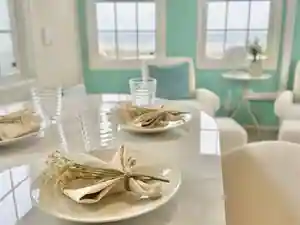
Solana Choshi Inubozaki
Dining
さのや 今川焼店
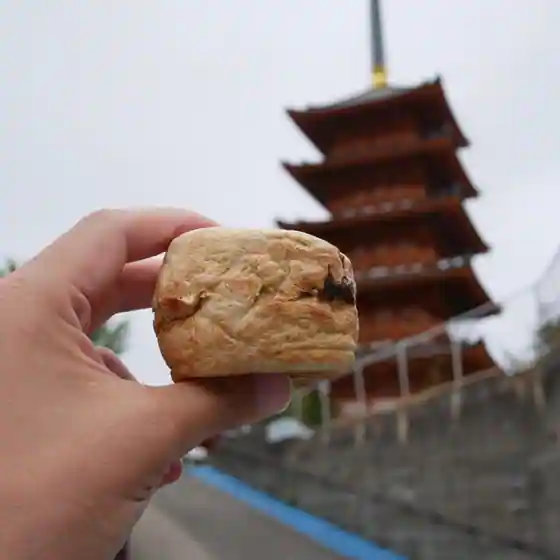
Sanoya Imagawayaki
渡
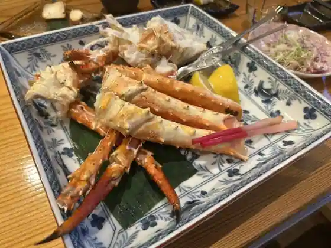
Watari
丼屋 七兵衛
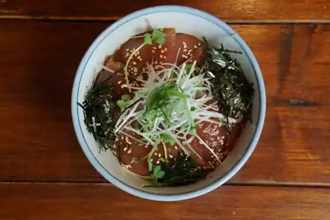
Donburi Ya Shichibyoe
久六
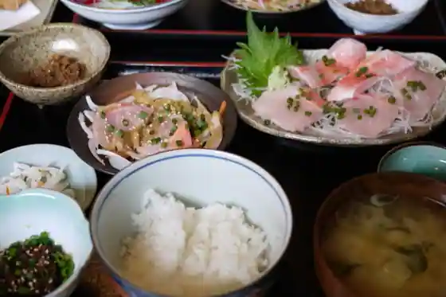
Kyuroku
ヤマタくん
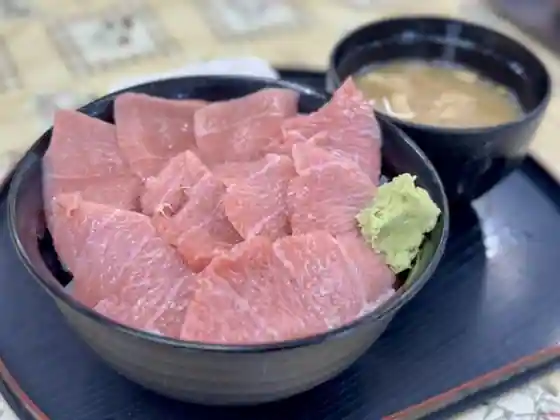
Yamata Kun
香海
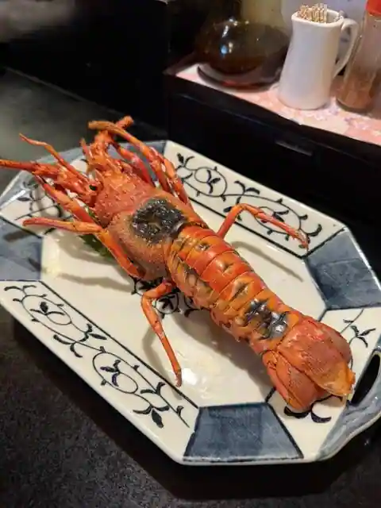
Kaori Umi
和泉庵わかや
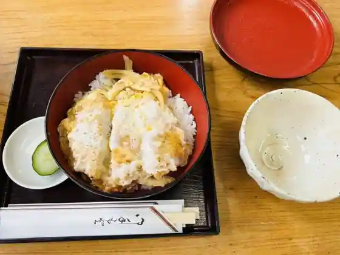
Izumi Iori Wakaya
一山いけす
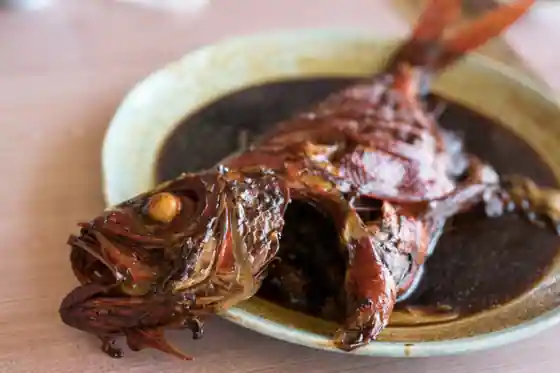
Hitoyama Ikesu
浜めし
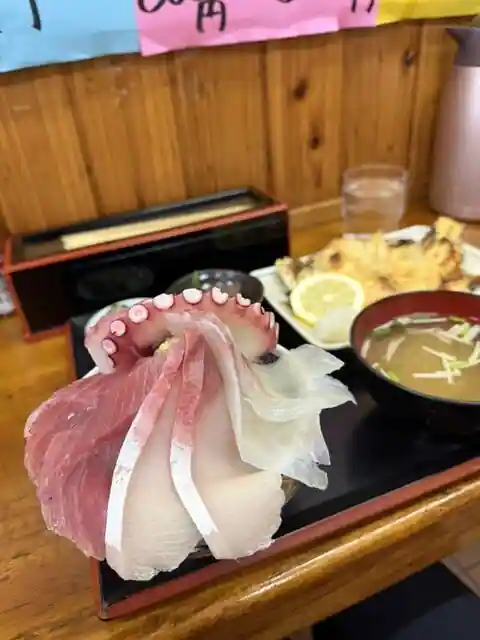
Hama Meshi
島武水産
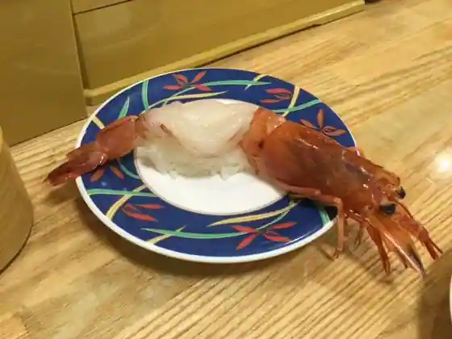
Shima Takeshi Suisan
プれンティ
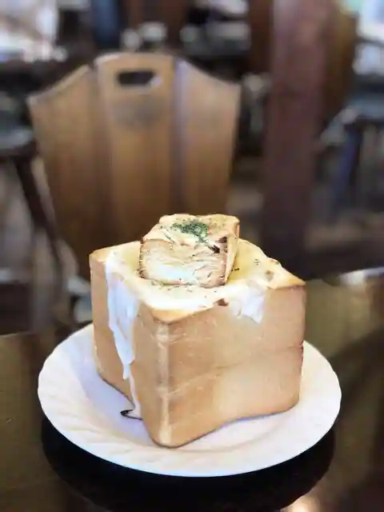
Pu Re Ntei
魚料理みうら
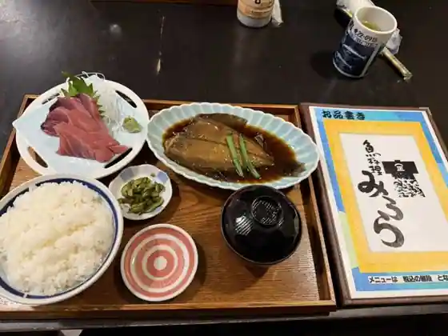
Sakanaryori Miura
大塚支店
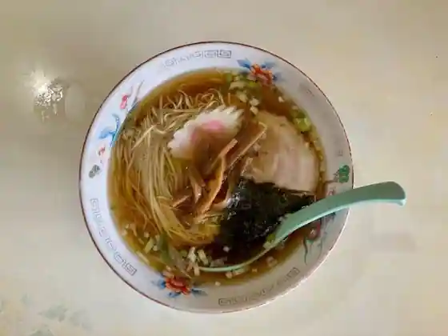
Otsuka Shi
吉原食堂
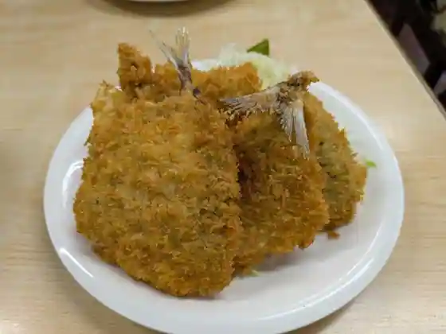
Yoshihara Shokudo
魚料理 常陸
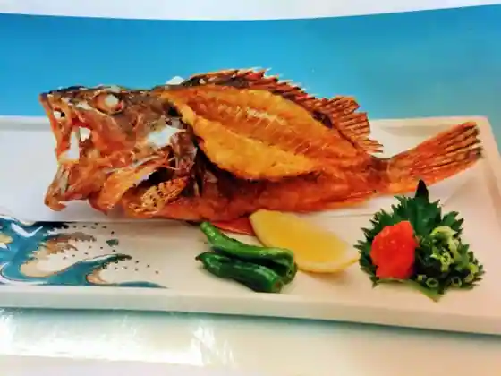
Sakanaryori Hitachi
シーフードレストラン うおっせ
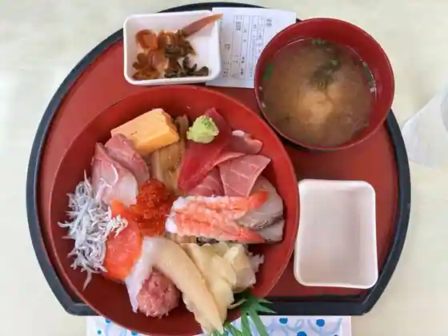
Shifudo Restaurant Uosse
いたこ丸
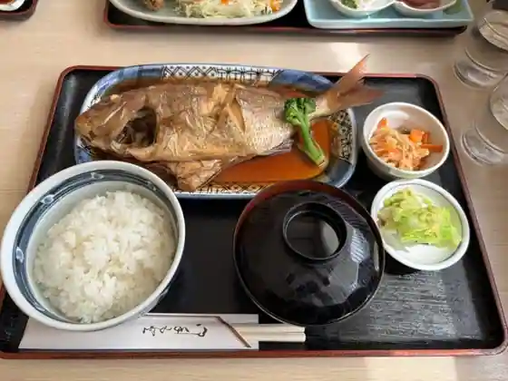
Itako Maru
銚子電鉄 ぬれ煎餅駅
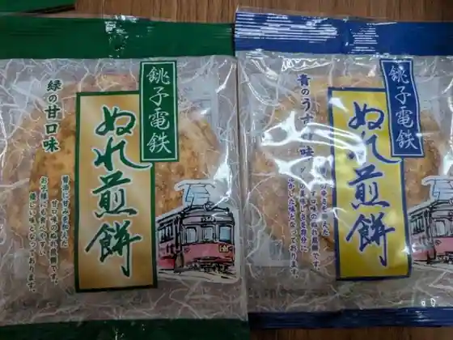
Choshi Dentetsu Nure Senbei Eki
中華ソバ 坂本
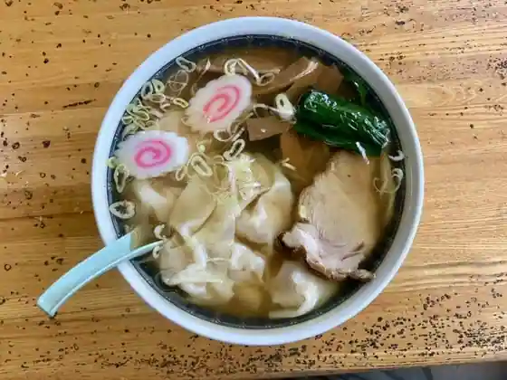
Chuka Soba Sakamoto
海ぼうず
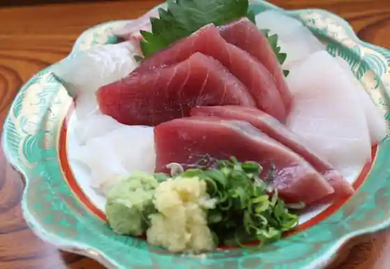
Umi Bozu
鮪蔵
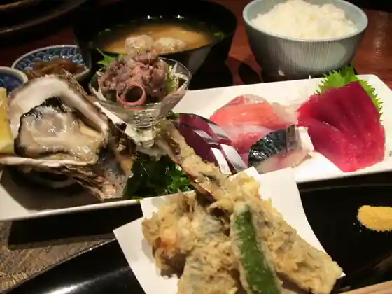
Maguro Kura
嘉平屋 川口店
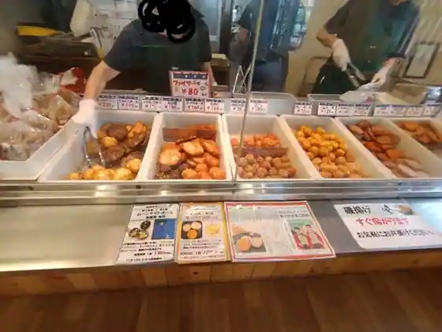
Kahei Ya Kawaguchi
Seaside Terrace
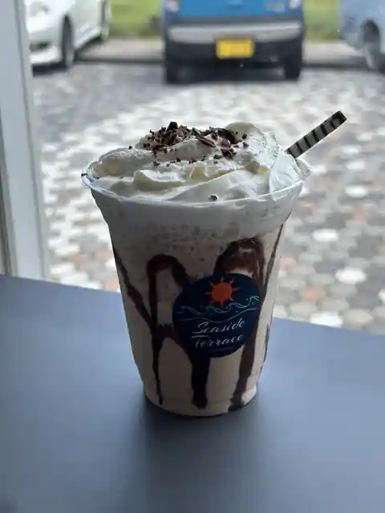
Seaside Terrace
たつみ
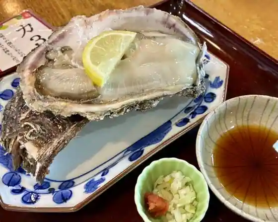
Tatsumi
Sights
Inuboe Terasuterasu (Ichibu Tenpo Wo Nozoki Kyukanchu)
Inubozaki Lighthouse

Byobugaura / Choshi Mariina Beach

Chikyu no Maruku Mie Ru Oka Tembo Kan

Nippon'ichi Hayai Shonichi no Shutsu / Inubozaki

Dai 2 Kai Chibaken Taiko Festival / Iinuma Kannon Keidai
Choshi Kaiyoken Kyusho Sekaiichi Chitchana Aquarium
Choshi Serekuto Market
Choshi Pototawa
Uosse 21
Choshi Denkitetsudo
Togawa Town no Streetscape
Mangan Tera
Saruta Shrine
Irukauotchingu
Choshi Chijimi Dentokogei Kan
Iinuma Kannon (Enpuku Tera)
Myoken Miya Myofuku Tera
Choshi Jio Park Museum
Choshi Dentetsu Nure Sembei Eki (O Miyage Baiten)
Umi no Soba no Habu Sono (Habu Garden Pogatto)
Nagasaki Beach
Choshi Supotsutaun
Togawa Mini Local History Museum
JA Chibamidori Nosambutsu Chokubai Tokoro Midori no Daichi
CHOSHI KAYAKS / Choshi Kayakkusu
Kyu Kosei Hall
Ishigami Shuzo